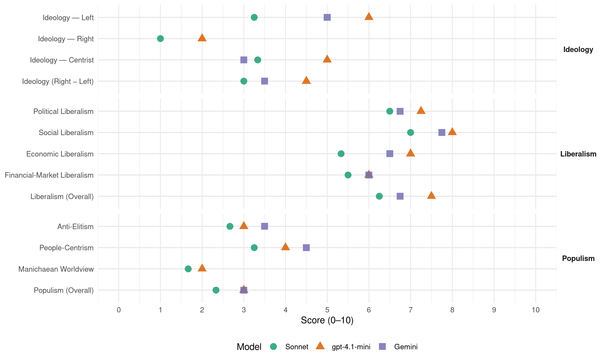

PVEM (Mexico, 2018)
manifesto_id 171101_201807
Get full text: This site shows derived annotations and short verbatim quotes only. The full manifesto text is © Manifesto Project / WZB — obtain it via manifesto-project.wzb.eu using the manifesto_id above.
Headline scores
| Dimension | Sonnet | gpt-4.1-mini | Gemini |
|---|---|---|---|
| Populism (Overall) | 2.3 | 3.0 | 3.0 |
| Anti-Elitism | 2.7 | 3.0 | 3.5 |
| People-Centrism | 3.2 | 4.0 | 4.5 |
| Manichaean Worldview | 1.7 | 2.0 | – |
| Ideology (Right − Left) | 3.0 | 4.5 | 3.5 |
| Liberalism (Overall) | 6.2 | 7.5 | 6.8 |
| Political Liberalism | 6.5 | 7.2 | 6.8 |
| Social Liberalism | 7.0 | 8.0 | 7.8 |
| Economic Liberalism | 5.3 | 7.0 | 6.5 |
| Financial-Market Liberalism | 5.5 | 6.0 | 6.0 |
Evidence per dimension
Economic Liberalism
Gemini · score 6.0 · verified · chunk 1
“fomentaría su libertad de elección y el”
libre de recursos adicionales para todas las personas fomentaría su libertad de elección y el funcionamiento de las fuerzas de mercado.
Gemini · score 4.0 · mixed · chunk 2
“Eliminar el cobro por el uso de estacionamiento”
EN EL PARTIDO VERDE PROPONEMOS: Eliminar el cobro por el uso de estacionamiento en los centros o plazas comerciales
Gemini · score 7.0 · verified · chunk 3
“incentivos para su desarrollo”
Es una industria o sector de la economía que requiere de incentivos para su desarrollo
gpt-4.1-mini · score 7.0 · verified · chunk 1
“promueve el financiamiento para la producción de energías alternativas”
Propusimos y aprobamos la Ley para el Aprovechamiento de Energías Renovables y el Financiamiento de la Transición Energética.
gpt-4.1-mini · score 7.0 · verified · chunk 2
“Incentivar fiscalmente la instalación de tecnologías que permitan el uso de la radiación solar como son los paneles solares en edificios públicos, hospitales, escuelas, viviendas, industrias y empresas e infraestructura pública.”
EN EL PARTIDO VERDE, PROPONEMOS: Incentivar fiscalmente la instalación de tecnologías que permitan el uso de la radiación solar como son los paneles solares en edificios públicos, hospitales, escuelas, viviendas, industrias y empresas e infraestructura pública.
gpt-4.1-mini · score 7.0 · verified · chunk 3
“economía verde, cuyo objetivo, de acuerdo con el Programa de las Naciones Unidas para el Medio Ambiente”
En México, durante los últimos años las políticas públicas implementadas han sido encaminadas a transitar a lo que comúnmente se conoce como “economía verde”, cuyo objetivo, de acuerdo con el Programa de las Naciones Unidas para el Medio Ambiente, es contribuir a mejorar el bienestar de las personas y la equidad social, así como reducir la escasez de recursos ambientales.
Sonnet · score 6.0 · verified · chunk 1
“inversión productiva, el crecimiento económico sostenible”
se establecen con el objeto de impulsar, a través de la inversión productiva, el crecimiento económico sostenible, sustentable y equilibrado
Sonnet · score 5.0 · mixed · chunk 2
“Reducir y en algunos casos eliminar los impuestos”
Reducir y en algunos casos eliminar los impuestos para la importación de tecnologías de energías renovables. Mediante una reforma en el Código Fiscal de la Federación
Sonnet · score 5.0 · verified · chunk 3
“incentivos fiscales para esta industria”
se detecta una fuerte carga fiscal para la industria, lo que desincentiva su desarrollo… los pocos u nulos incentivos fiscales para esta industria.
Sonnet · score 5.0 · verified · chunk 4
“calidad regulatoria”
México no acredita cuatro de los seis rubros evaluados acreditando apenas los rubros de eficiencia gubernamental y calidad regulatoria
Financial-Market Liberalism
Gemini · score 6.0 · verified · chunk 1
“fomentar la inclusión financiera de los”
Crédito Joven, cuyo objetivo es fomentar la inclusión financiera de los jóvenes mediante productos y servicios financieros
gpt-4.1-mini · score 6.0 · verified · chunk 1
“Fondo Especial en el presupuesto público anual para la generación de electricidad”
Impulsamos un Fondo Especial en el presupuesto público anual para la generación de electricidad a través de fuentes renovables de energía como la solar, eólica, mareomotriz, biocombustibles y mini hidráulica.
Sonnet · score 6.0 · verified · chunk 1
“Programa Crédito Joven, cuyo objetivo es fomentar la inclusión financiera”
Un ejemplo de ello es el Programa Crédito Joven, cuyo objetivo es fomentar la inclusión financiera de los jóvenes mediante productos y servicios financieros con tasas preferenciales
Sonnet · score 5.0 · verified · chunk 2
“gastos fiscales por concepto del ISR”
es posible que los gastos fiscales por concepto del ISR aumenten. De acuerdo con la Secretaría de Hacienda y Crédito Público
Political Liberalism
Gemini · score 7.0 · verified · chunk 1
“salvaguardar las garantías constitucionales de las”
garantizar la seguridad de los ciudadanos, salvaguardar las garantías constitucionales de las víctimas y de todo proceso penal.
Gemini · score 5.0 · verified · chunk 2
“facultar al Congreso de la Unión para legislar”
Constitución Política de los Estados Unidos Mexicanos, para facultar al Congreso de la Unión para legislar en materia de protección, bienestar
Gemini · score 7.0 · verified · chunk 3
“construcción de una sociedad democrática”
crea bases sólidas para construir una sociedad democrática, donde los miembros acuden
Gemini · score 8.0 · verified · chunk 4
“pesos y contrapesos que eviten los excesos del poder”
gobierno, es el carácter en que se aplica entre los diversos órganos, donde los poderes de la unión cuenten con pesos y contrapesos que eviten los excesos del poder. Los sistemas de gobierno
gpt-4.1-mini · score 7.0 · verified · chunk 1
“reforma constitucional en el artículo cuarto sobre los derechos humanos”
En el 2011 con la reforma constitucional en el artículo cuarto sobre los derechos humanos, incorporó la garantía para todas las personas del derecho a la alimentación nutritiva, suficiente y de calidad.
gpt-4.1-mini · score 7.0 · verified · chunk 2
“Reformar la Constitución Política de los Estados Unidos Mexicanos, para facultar al Congreso de la Unión para legislar en materia de protección, bienestar y maltrato animal.”
Ante esta situación de maltrato animal es que se propone reformar la Constitución Política de los Estados Unidos Mexicanos, a fin de facultar al Congreso para legislar en materia de protección y bienestar animal.
gpt-4.1-mini · score 7.0 · verified · chunk 3
“derecho a un medio ambiente sano”
Garantizar el derecho a un medio ambiente sano en las entidades federativas. RESUMEN EJECUTIVO: Toda persona tiene derecho a un medio ambiente sano para su desarrollo y bienestar, siendo el Estado el encargado de garantizar este derecho, plasmado en el artículo cuarto de la Constitución Política de los Estados Unidos Mexicanos.
gpt-4.1-mini · score 8.0 · verified · chunk 4
“la confianza en las instituciones mexicanas”
De acuerdo con la encuesta nacional en viviendas México: Confianza en Instituciones 2016, realizada por Consulta Mitofsky, caracterizada por ser la séptima que de manera consecutiva muestra cifras a la baja en materia de confianza en las instituciones mexicanas…
Sonnet · score 7.0 · verified · chunk 1
“trabajará en conjunto con la sociedad organizada de manera participativa, democrática y libre”
el Partido Verde Ecologista trabajará en conjunto con la sociedad organizada de manera participativa, democrática y libre, a fin de tomar las decisiones fundamentales
Sonnet · score 6.0 · verified · chunk 2
“facultar al Congreso para legislar”
es preciso facultar al Congreso para legislar en materia de protección y bienestar animal, a fin de evitar el maltrato animal
Sonnet · score 6.0 · verified · chunk 3
“La participación social es un elemento fundamental para que una nación se consolide como democrática”
La participación social es un elemento fundamental para que una nación se consolide como democrática. En una sociedad organizada
Sonnet · score 7.0 · verified · chunk 4
“avanzar en la democracia”
en la medida que aglutine a las fuerzas políticas, avanzar en la democracia. RESUMEN EJECUTIVO: La creciente pluralidad, competencia y participación política
Liberalism (Overall)
Gemini · score 7.0 · verified · chunk 1
“fomentaría su libertad de elección y el”
libre de recursos adicionales para todas las personas fomentaría su libertad de elección y el funcionamiento de las fuerzas de mercado.
Gemini · score 5.0 · verified · chunk 2
“facultar al Congreso de la Unión para legislar”
Constitución Política de los Estados Unidos Mexicanos, para facultar al Congreso de la Unión para legislar en materia de protección, bienestar
Gemini · score 7.0 · verified · chunk 3
“derecho a la no discriminación”
los derechos laborales, el derecho a la no discriminación y la igualdad laboral
Gemini · score 8.0 · verified · chunk 4
“pesos y contrapesos que eviten los excesos del poder”
gobierno, es el carácter en que se aplica entre los diversos órganos, donde los poderes de la unión cuenten con pesos y contrapesos que eviten los excesos del poder. Los sistemas de gobierno
gpt-4.1-mini · score 7.0 · verified · chunk 1
“reforma constitucional en el artículo cuarto sobre los derechos humanos”
En el 2011 con la reforma constitucional en el artículo cuarto sobre los derechos humanos, incorporó la garantía para todas las personas del derecho a la alimentación nutritiva, suficiente y de calidad.
gpt-4.1-mini · score 7.0 · verified · chunk 2
“Reformar la Constitución Política de los Estados Unidos Mexicanos, para facultar al Congreso de la Unión para legislar en materia de protección, bienestar y maltrato animal.”
Ante esta situación de maltrato animal es que se propone reformar la Constitución Política de los Estados Unidos Mexicanos, a fin de facultar al Congreso para legislar en materia de protección y bienestar animal.
gpt-4.1-mini · score 7.0 · verified · chunk 3
“derecho a un medio ambiente sano”
Garantizar el derecho a un medio ambiente sano en las entidades federativas. RESUMEN EJECUTIVO: Toda persona tiene derecho a un medio ambiente sano para su desarrollo y bienestar, siendo el Estado el encargado de garantizar este derecho, plasmado en el artículo cuarto de la Constitución Política de los Estados Unidos Mexicanos.
gpt-4.1-mini · score 9.0 · verified · chunk 4
“el disfrute de los derechos humanos en igualdad de circunstancias”
En el Partido Verde estamos convencidos que la base para la integración de una democracia, es el disfrute de los derechos humanos en igualdad de circunstancias, así como la implementación de acciones afirmativas para alcanzar la paridad de género y la sana convivencia…
Sonnet · score 6.0 · verified · chunk 1
“trabajará en conjunto con la sociedad organizada de manera participativa, democrática y libre”
el Partido Verde Ecologista trabajará en conjunto con la sociedad organizada de manera participativa, democrática y libre, a fin de tomar las decisiones fundamentales
Sonnet · score 6.0 · verified · chunk 2
“Deducción del 100% por las inversiones”
Deducción del 100% por las inversiones para uso de aguas tratadas y captación de agua pluvial. Mediante una reforma en el artículo 33 de la Ley del Impuesto sobre la Renta
Sonnet · score 6.0 · verified · chunk 3
“erradicando así la brecha de género”
para establecer el principio de equidad salarial, erradicando así la brecha de género e incluyendo la definición de discriminación
Sonnet · score 7.0 · verified · chunk 4
“garantizar los derechos civiles, familiares, económicos, sociales”
se deben garantizar los derechos civiles, familiares, económicos, sociales y políticos de todos y de cada uno, pero sobretodo, eliminar todo tipo de violencia y discriminación
Anti-Elitism
Gemini · score 4.0 · verified · chunk 1
“la pobreza, la corrupción, la deficiente”
reflejan en diferentes ámbitos como son la pobreza, la corrupción, la deficiente oferta educativa y de salud
Gemini · score 3.0 · verified · chunk 4
“percepción de corrupción, opacidad y poca productividad”
desempeño del Congreso de la Unión no ha sido el mejor evaluado por la ciudadanía en general, pues prima la percepción de corrupción, opacidad y poca productividad. Después de una serie de
gpt-4.1-mini · score 3.0 · verified · chunk 1
“desconfianza en las autoridades”
entre los principales motivos que mencionaron las víctimas para no denunciar fueron la desconfianza en las autoridades y por considerar una pérdida de tiempo acudir con el Ministerio Público.
Sonnet · score 2.0 · verified · chunk 1
“la corrupción, la deficiente oferta educativa”
dificultades sociales, políticas, económicas y culturales que se reflejan en diferentes ámbitos como son la pobreza, la corrupción, la deficiente oferta educativa y de salud
Sonnet · score 2.0 · mixed · chunk 2
“solo persiguen intereses económicos”
algunos encargados de estas tiendas de animales solo persiguen intereses económicos, que atentan con el trato digno
Sonnet · score 2.0 · verified · chunk 3
“solo el 9% en los partidos políticos”
el 15% en el gobierno y solo el 9% en los partidos políticos. De este modo, se observa que el capital social
Sonnet · score 4.0 · verified · chunk 4
“prima la percepción de corrupción, opacidad y poca productividad”
el desempeño del Congreso de la Unión no ha sido el mejor evaluado por la ciudadanía en general, pues prima la percepción de corrupción, opacidad y poca productividad
Ideology — Centrist
Gemini · score 3.0 · verified · chunk 4
“atender el reclamo ciudadano de reducir la integración”
MENOS DIPUTADOS, MÁS PRESUPUESTO PARA TI VISIÓN: Hacer más eficiente la labor política y legislativa, mejorar la representatividad ciudadana y generar ahorros significativos de recursos públicos, a partir de un replanteamiento del modelo Constitucional para la elección e integración del Congreso de la Unión. RESUMEN EJECUTIVO: Se atenderá el reclamo ciudadano de reducir la integración y en consecuencia, los costos del Congreso
gpt-4.1-mini · score 5.0 · verified · chunk 1
“actuando con responsabilidad y generando una relación de empatía entre la institución política y la sociedad”
Siempre actuando con responsabilidad y generando una relación de empatía entre la institución política y la sociedad, sin olvidar nuestros principios rectores como lo son el cuidado al medio ambiente y el desarrollo sostenible.
gpt-4.1-mini · score 5.0 · verified · chunk 4
“la percepción de corrupción, opacidad y poca productividad”
…evaluado por la ciudadanía en general, pues prima la percepción de corrupción, opacidad y poca productividad. Después de una serie de evaluaciones realizadas por la consultora especializada Integralia, ésta destaca que la problemática de nuestro Congreso estriba…
Sonnet · score 3.0 · verified · chunk 1
“desarrollo sustentable que permita a los seres humanos”
su acción política se ha orientado a la promoción de un desarrollo sustentable que permita a los seres humanos vivir en una sociedad justa y libre
Sonnet · score 3.0 · verified · chunk 3
“EN EL PARTIDO VERDE PROPONEMOS”
EN EL PARTIDO VERDE PROPONEMOS: Incorporar en la Ley General del Equilibrio Ecológico
Sonnet · score 4.0 · verified · chunk 4
“reclamo ciudadano de reducir la integración”
Se atenderá el reclamo ciudadano de reducir la integración y en consecuencia, los costos del Congreso de la Unión
Ideology — Left
Gemini · score 5.0 · verified · chunk 1
“un desarrollo económico y social equitativo”
riquezas naturales, las cuales pueden permitir generar un desarrollo económico y social equitativo para todos.
gpt-4.1-mini · score 6.0 · verified · chunk 1
“combatir y erradicar los problemas de acceso a la alimentación”
México es parte y a través de la cual asumió su compromiso de adecuar su política a fin de combatir y erradicar los problemas de acceso a la alimentación.
Sonnet · score 4.0 · verified · chunk 1
“esquema de renta mínima básica”
la posibilidad de modificar o intercambiar ciertas políticas de desarrollo social por un esquema de renta mínima básica
Sonnet · score 3.0 · verified · chunk 2
“fortalecer a la economía familiar”
A fin de fortalecer a la economía familiar así como de fomentar el mercado interno, México debe de contar con estacionamientos gratuitos
Sonnet · score 4.0 · verified · chunk 3
“garantizar el tratamiento gratuito de todo tipo de cáncer infantil”
deben crear nuevos complejos de atención en el país y garantizar el tratamiento gratuito de todo tipo de cáncer infantil.
Sonnet · score 2.0 · verified · chunk 4
“pagar a los trabajadores los mismos salarios sin discriminación”
Reformar el artículo 132 de la Ley Federal del Trabajo, para establecer como obligación de los patrones, pagar a los trabajadores los mismos salarios sin discriminación de género
Ideology (Right − Left)
Gemini · score 4.0 · verified · chunk 1
“un desarrollo económico y social equitativo”
riquezas naturales, las cuales pueden permitir generar un desarrollo económico y social equitativo para todos.
Gemini · score 3.0 · verified · chunk 4
“atender el reclamo ciudadano de reducir la integración”
MENOS DIPUTADOS, MÁS PRESUPUESTO PARA TI VISIÓN: Hacer más eficiente la labor política y legislativa, mejorar la representatividad ciudadana y generar ahorros significativos de recursos públicos, a partir de un replanteamiento del modelo Constitucional para la elección e integración del Congreso de la Unión. RESUMEN EJECUTIVO: Se atenderá el reclamo ciudadano de reducir la integración y en consecuencia, los costos del Congreso
gpt-4.1-mini · score 4.0 · verified · chunk 1
“recuperar la confianza en nuestra nación”
es más urgente que nunca recuperar la confianza en nuestra nación para reconstruir el revestimiento social y lograr un país más armonioso.
gpt-4.1-mini · score 5.0 · verified · chunk 4
“la percepción de corrupción, opacidad y poca productividad”
…evaluado por la ciudadanía en general, pues prima la percepción de corrupción, opacidad y poca productividad. Después de una serie de evaluaciones realizadas por la consultora especializada Integralia, ésta destaca que la problemática de nuestro Congreso estriba…
Sonnet · score 3.0 · verified · chunk 1
“esquema de renta mínima básica”
la posibilidad de modificar o intercambiar ciertas políticas de desarrollo social por un esquema de renta mínima básica
Sonnet · score 2.0 · mixed · chunk 2
“fortalecer a la economía familiar”
A fin de fortalecer a la economía familiar así como de fomentar el mercado interno, México debe de contar con estacionamientos gratuitos
Sonnet · score 3.0 · verified · chunk 3
“garantizar el tratamiento gratuito de todo tipo de cáncer infantil”
deben crear nuevos complejos de atención en el país y garantizar el tratamiento gratuito de todo tipo de cáncer infantil.
Sonnet · score 3.0 · verified · chunk 4
“reclamo ciudadano de reducir la integración”
Se atenderá el reclamo ciudadano de reducir la integración y en consecuencia, los costos del Congreso de la Unión
Ideology — Right
gpt-4.1-mini · score 2.0 · verified · chunk 1
“garantizar que las actividades a realizarse con cargo al fondo se realicen en el lugar donde haya constituido su domicilio”
que éstos sean destinados al impulso o establecimiento de actividades relacionadas o afines a la profesión determinada en la cédula profesional del solicitante y además se garantice que las actividades a realizarse con cargo al fondo se realicen en el lugar donde haya constituido su domicilio y acreditado una residencia de al menos 7 años.
Sonnet · score 1.0 · verified · chunk 1
“sanciones estrictas por la portación de armas”
VISIÓN: Sanciones estrictas por la portación de armas de fuego
Sonnet · score 1.0 · verified · chunk 3
“protección y conservación del medio ambiente”
a actividades y programas relacionados directamente con la protección y conservación del medio ambiente que la entidad federativa requiera.
Manichaean Worldview
gpt-4.1-mini · score 2.0 · verified · chunk 1
“clima de violencia en México”
evitar la comisión de delitos con ese tipo de artefactos que únicamente influyen a empeorar el clima de violencia en México.
Sonnet · score 1.0 · verified · chunk 1
“violaciones de derechos, desigualdad e injusticia”
Ante un horizonte de violencia, violaciones de derechos, desigualdad e injusticia, es más urgente que nunca recuperar la confianza
Sonnet · score 2.0 · verified · chunk 3
“hechos de corrupción y de un mal ejercicio”
Se trata de hechos de corrupción y de un mal ejercicio de funciones públicas, lo cual merece castigos ejemplares.
Sonnet · score 2.0 · verified · chunk 4
“los ciudadanos no se sienten representados por sus diputados”
está claro que los ciudadanos no se sienten representados por sus diputados y senadores, de tal suerte que se deben realizar las propuestas legislativas necesarias
People-Centrism
Gemini · score 5.0 · verified · chunk 1
“un Estado moderno, cercano a la gente”
significativos en la construcción de un Estado moderno, cercano a la gente y apegado a los principios rectores
Gemini · score 4.0 · verified · chunk 4
“atender el reclamo ciudadano de reducir la integración”
MENOS DIPUTADOS, MÁS PRESUPUESTO PARA TI VISIÓN: Hacer más eficiente la labor política y legislativa, mejorar la representatividad ciudadana y generar ahorros significativos de recursos públicos, a partir de un replanteamiento del modelo Constitucional para la elección e integración del Congreso de la Unión. RESUMEN EJECUTIVO: Se atenderá el reclamo ciudadano de reducir la integración y en consecuencia, los costos del Congreso
gpt-4.1-mini · score 4.0 · verified · chunk 1
“recuperar la confianza en nuestra nación”
es más urgente que nunca recuperar la confianza en nuestra nación para reconstruir el revestimiento social y lograr un país más armonioso.
Sonnet · score 3.0 · verified · chunk 1
“construir un México más próspero, más libre”
esas oportunidades se puedan convertir en logros, con el fin de construir un México más próspero, más libre y más justo
Sonnet · score 3.0 · verified · chunk 2
“garantizar el derecho a la alimentación a los sectores menos favorecidos”
promover la instalación de bancos de alimentos en las entidades federativas, y con ello garantizar el derecho a la alimentación a los sectores menos favorecidos de la población
Sonnet · score 3.0 · verified · chunk 3
“Toda persona tiene derecho a un medio ambiente sano”
Toda persona tiene derecho a un medio ambiente sano para su desarrollo y bienestar, siendo el Estado el encargado
Sonnet · score 4.0 · verified · chunk 4
“atender el reclamo ciudadano de reducir la integración”
Se atenderá el reclamo ciudadano de reducir la integración y en consecuencia, los costos del Congreso de la Unión
Populism (Overall)
Gemini · score 3.0 · verified · chunk 1
“un Estado moderno, cercano a la gente”
significativos en la construcción de un Estado moderno, cercano a la gente y apegado a los principios rectores
Gemini · score 3.0 · verified · chunk 4
“percepción de corrupción, opacidad y poca productividad”
desempeño del Congreso de la Unión no ha sido el mejor evaluado por la ciudadanía en general, pues prima la percepción de corrupción, opacidad y poca productividad. Después de una serie de
gpt-4.1-mini · score 3.0 · verified · chunk 1
“desconfianza en las autoridades”
entre los principales motivos que mencionaron las víctimas para no denunciar fueron la desconfianza en las autoridades y por considerar una pérdida de tiempo acudir con el Ministerio Público.
Sonnet · score 2.0 · verified · chunk 1
“la corrupción, la deficiente oferta educativa”
dificultades sociales, políticas, económicas y culturales que se reflejan en diferentes ámbitos como son la pobreza, la corrupción, la deficiente oferta educativa y de salud
Sonnet · score 2.0 · mixed · chunk 2
“sectores menos favorecidos de la población”
garantizar el derecho a la alimentación a los sectores menos favorecidos de la población
Sonnet · score 2.0 · verified · chunk 3
“solo el 9% en los partidos políticos”
el 15% en el gobierno y solo el 9% en los partidos políticos. De este modo, se observa que el capital social
Sonnet · score 3.0 · verified · chunk 4
“prima la percepción de corrupción, opacidad”
el desempeño del Congreso de la Unión no ha sido el mejor evaluado por la ciudadanía en general, pues prima la percepción de corrupción, opacidad y poca productividad
Social Liberalism